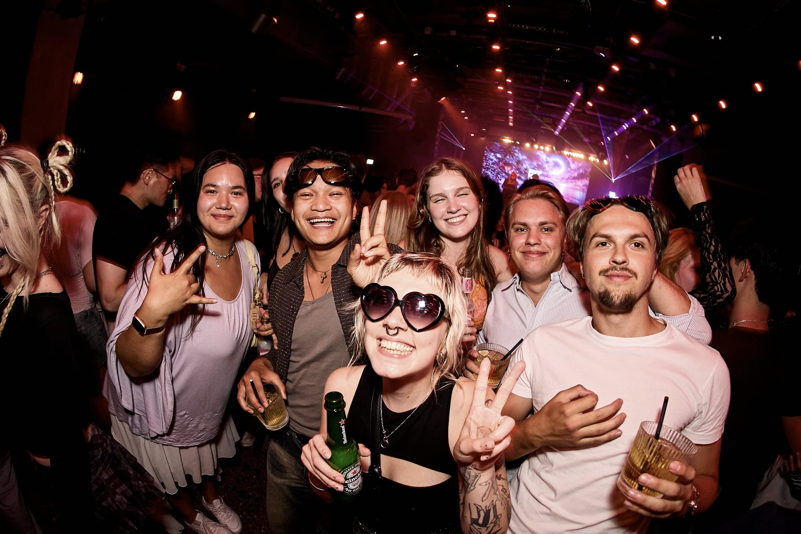

Stockholm / Portraits & nightlife
Up close.
Wide open.
Wide-angle portraits that put you in the middle of the night. The people, the movement, the room — all in the frame.
Explore the work
01 / Selected work
People. Sound. Atmosphere.
A selection from the DJ booth,
the stage and the dance floor.
{kind=link}
{kind=link}
{kind=link}
{kind=link}
{kind=link}
{kind=link}
{kind=link}
{kind=link}
{kind=link}
02 / The approach
A portrait with
the night still in it.
I’m Padraig, the photographer behind STHLM Night. I photograph people and events in Stockholm, with wide-angle portraits at the centre of my work.
I work close to the people I’m photographing, keeping their surroundings in the picture. Expressive faces, friends leaning into the frame, and the light of the room become part of the portrait.
That same perspective runs through my event coverage, from the DJ booth to the dance floor. Portraits give the night its faces; the wider photographs show where it all happened.
03 / Book a shoot
Your people.
Your night.
For portraits or event coverage in Stockholm,
send the date, venue and what you have in mind.